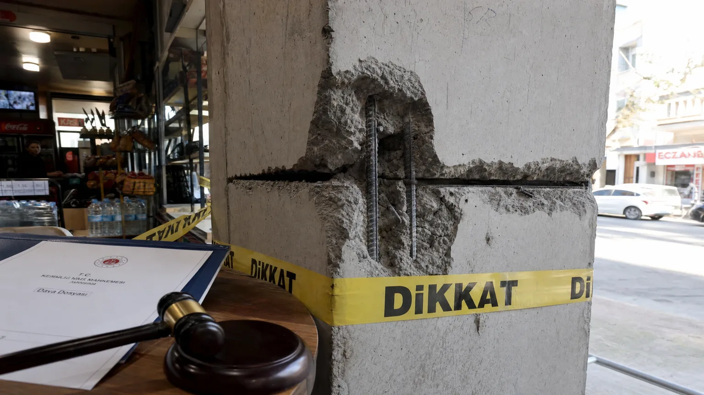

Kolon Kesmenin Cezası 2026 — Hukuki Sorumluluk ve İhbar
Türkiye'deki büyük deprem kayıplarının önemli nedenlerinden biri, sahiplerin veya kiracıların izinsiz olarak taşıyıcı kolonları kesmesi veya zayıflatmasıdır. Bu eylem 2018'den itibaren ağır cezalara bağlandı; hapis, para cezası ve tazminat sorumluluğu söz konusu. Komşu binasında bu durumu fark ettiğinizde ne yapacağınızı bilmeniz gerekir.
Kolon Kesmek Neden Bu Kadar Tehlikeli?
Bir betonarme bina, kolonlar üzerinde durur. Kolonlar kesildiğinde veya zayıflatıldığında bina deprem yüklerini taşıyamaz. Kahramanmaraş depreminde yıkılan binaların %38'inde mağaza ve restoranların kolon kesim yaptığı tespit edildi (KAÇKM raporu, Mart 2024).
Yumuşak kat sendromu: Zemin katta dükkan açmak için kolonların kesilmesi, üst katların ağırlığını taşıma kapasitesini kaybetmesine yol açar. Sarsıntı sırasında yumuşak katın çökmesiyle bina pancake (krep) olur — herkes ölür.
Türk Ceza Kanunu'na Göre Kolon Kesmenin Cezası
TCK 184. madde 'İmar Kirliliği' suçu kapsamında kolon kesme: 1 yıldan 5 yıla hapis cezası. Eğer eylem deprem sonrası ölüme neden olursa: TCK 85. madde 'Taksirle Öldürme' hükümleri devreye girer; 2 yıldan 6 yıla hapis cezası.
Kasıtlı kolon kesimi (binayı yıkmak amacıyla) TCK 152. madde 'Mala Zarar Verme' suçu kapsamına girer ve daha ağır cezalandırılır: 4 aydan 3 yıla kadar hapis veya adli para cezası.
İmar Kirliliği Suçu Kapsamında Değerlendirme
İmar Kanunu (3194 sayılı) 32. ve 42. maddeleri ruhsatsız tadilatı yasaklar. Kolon kesimi otomatik olarak ruhsatsız tadilattır. Cezai yaptırımlar: Yapının yıkım kararı (zorunlu), idari para cezası 50.000-300.000 TL arası (2026 değeri).
Sadece kolonu kesen kişi değil, bu kolonun üzerine inşaat yapan müteahhit veya bina sahibi de sorumludur. Kollektif suç kapsamına girer.
Kat Mülkiyeti Kanunu Açısından Taşıyıcı Unsurlar
Kat Mülkiyeti Kanunu 19. madde: 'Ana yapının taşıyıcı unsurlarına müdahale eden kat maliki, oluşan zararları tazmin etmek zorundadır.' Bu zarar: bina değer kaybı + güçlendirme maliyeti + komşuların kira kaybı + manevi tazminat.
Apartmanda kolon kesen daireden alınabilecek tazminat tipik olarak 500.000-3 milyon TL arasındadır. Ev sahipleri toplu olarak dava açabilir.
Apartmanda Kolon Kesen Komşuya Ne Yapılabilir?
Adım 1: Apartman yöneticisini bilgilendirin. Olağan kat malikleri kurulu kararıyla durum tespit ettirilir.
Adım 2: İhtarname gönderin (noterden). Komşuya kolonun yeniden inşası ve hasarın onarılması için süre verin (genelde 30 gün).
Adım 3: Süre dolduğunda tazminat davası açın. Aynı zamanda Cumhuriyet Savcılığı'na suç duyurusunda bulunun.
Adım 4: Belediye Yapı Denetim Müdürlüğü'ne ihbar — bina için yıkım/güçlendirme kararı alabilir.
Belediyeye veya Yapı Denetim Kuruluşuna İhbar Süreci
İhbar yöntemleri: (1) Belediye Yapı Denetim Müdürlüğü'ne yazılı dilekçe veya CIMER üzerinden online. (2) AFAD acil hattı (122) — özellikle deprem sonrası dönemde. (3) Çevre Şehircilik Bakanlığı'nın e-bilgilendirme sistemi.
İhbarcının kimliği gizli tutulur. İncelenen yapıda gerçekten kolon kesimi tespit edilirse, 72 saat içinde yıkım/mühürleme kararı çıkar.
Mülk Sahibinin ve Müteahhitin Sorumluluğu
Kolon kesimini yapan kiracı ise: kiracı + mülk sahibi müteselsil sorumludur. Mülk sahibi 'haberim yoktu' savunmasıyla sorumluluktan kurtulamaz; bina denetim sorumluluğu sahibe aittir.
Müteahhit kolonu izinsiz kestiyse: Yapı Denetim Yasası kapsamında ağır yaptırım. Müteahhit listeden silinir, 5 yıl iş alamaz, geçmiş işlerinin de yeniden incelenmesi başlatılır.
Deprem Sonrası Kolon Kesimi Nedeniyle Tazminat Davaları
Kahramanmaraş depremi sonrası açılan davalarda, kolon kesimi nedeniyle hayatını kaybedenlerin ailelerine 8.5 milyon TL'ye varan tazminatlar ödendi. Manevi tazminat + maddi tazminat + cenaze masrafları kapsama girer.
Tazminat sigortadan değil suçluların kişisel mal varlığından alınır. Kolon kesen kişinin malları haczedilebilir. Bu nedenle DASK + ek deprem sigortası önemlidir — sigortacı geri dönüş hakkıyla suçlu kişiyi takip edebilir.
Kolon Hasarını Tespit Ettirme: Uzman İncelemesi
Kolon kesimi şüphesinde uzman incelemesi: (1) Görsel inceleme (gözle veya endoskop). (2) Ultrasonik ölçüm — kolonda boşluk veya kesim tespiti. (3) Termal kamera — beton kalitesi farkları. (4) Karot örneği — laboratuvarda dayanım testi.
Tespit edilen hasar resmi rapora geçince hukuki süreç başlar. Bilirkişi raporu mahkemede esas delildir.
Sıkça Sorulan Sorular
Kolonun bir kısmını kesip yerine kiriş koymak yasal mı?
Hayır, taşıyıcı kolona herhangi bir müdahale (kısmi kesim, açıklığı genişletme, kiriş ekleme) statik mühendis onayı ve belediye ruhsatı olmadan suçtur.
Kolon kestim, mı haberim yok dersem ceza var mı?
'Kötü niyet' kanıtlanmasa bile İmar Kirliliği suçu kapsamına girer. Niyet aranmaksızın 1 yıldan 5 yıla hapis cezası uygulanır.
Komşum yıllar önce kolon kesmiş, hala dava açılır mı?
İmar Kirliliği suçunda zamanaşımı 8 yıldır. Kolonun durumu hala mevcutsa zamanaşımı işlemez (devam eden suç). Tazminat davası 10 yıl sürer.
Apartman yöneticisi olarak kolon kesimi tespit edersem yükümlülüğüm var mı?
Evet, KMK 35. madde gereği yöneticilerin durumu kat maliklerine bildirme ve hukuki süreci başlatma zorunluluğu vardır. Aksi halde yönetici sorumlu olur.
Suç duyurusu kimi sorumlu kılar?
Kolon kesen kişi (uygulayıcı), tadilat ruhsatı vermeyen ama izin veren mülk sahibi, ve denetlemekle görevli yapı denetim firması müteselsil sorumludur.